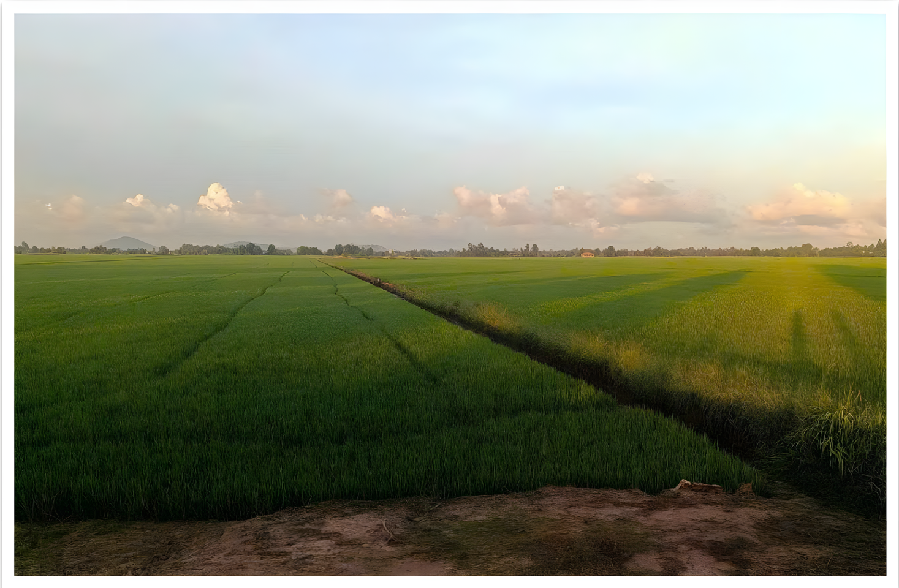
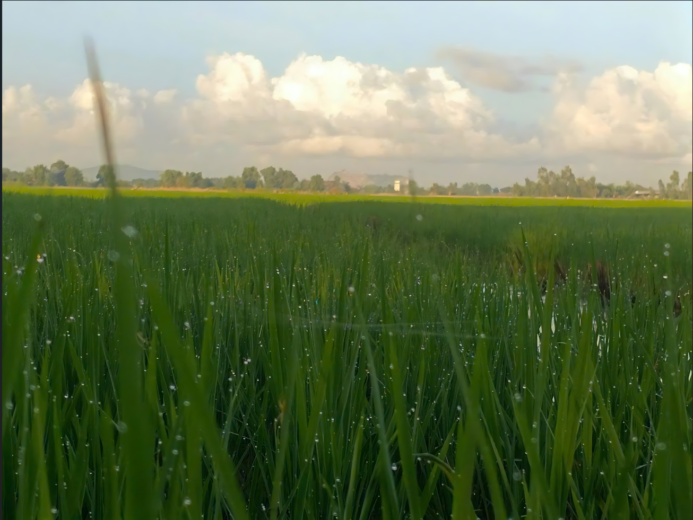
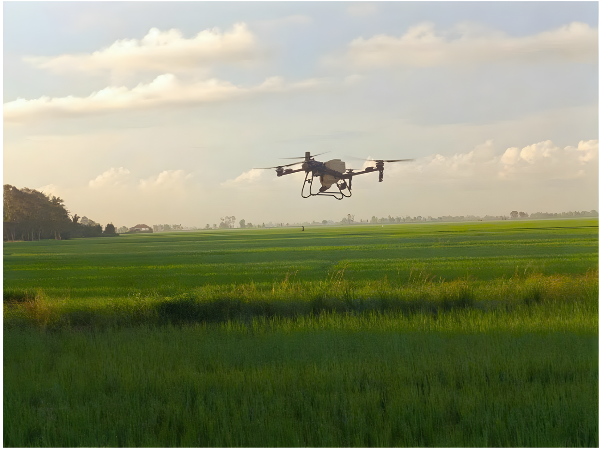
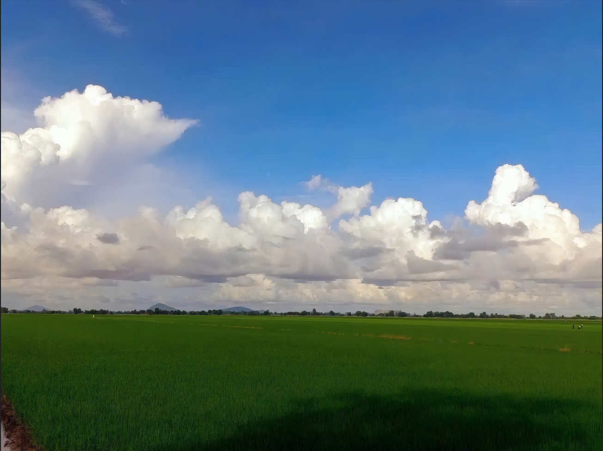
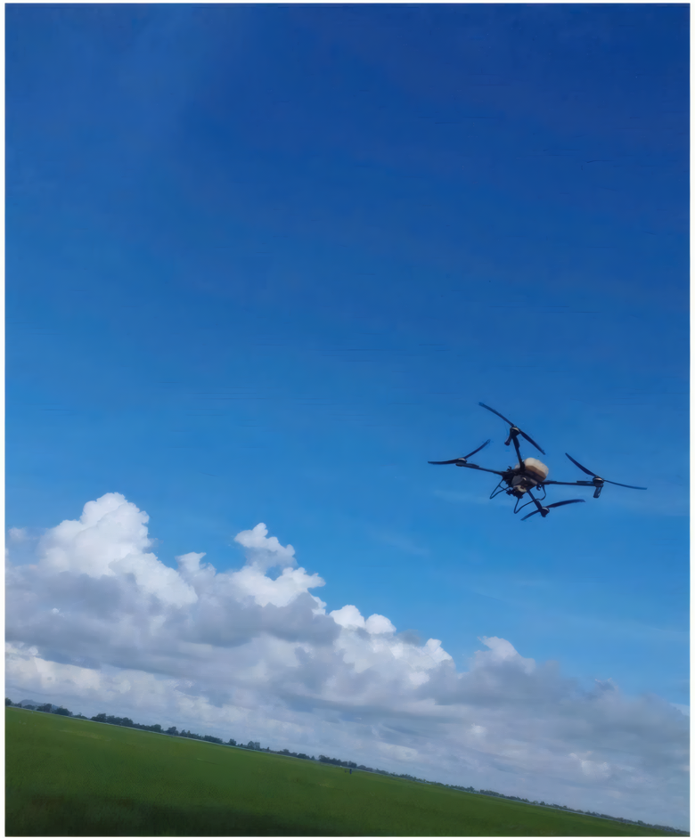

Hỗ trợ tiết kiệm sức lao động
Người vận hành có thể điều khiển thiết bị từ xa, giảm nhu cầu mang bình phun đi khắp thửa ruộng trong một số công đoạn chăm sóc cây trồng.

NÔNG NGHIỆP · CÔNG NGHỆ · CON NGƯỜI
Khi công nghệ phát triển cùng với nông nghiệp
Từ những bờ ruộng lấm bùn đến những chuyến bay trên không, công nghệ đang mở ra những cách làm mới cho nông nghiệp Việt Nam.
KHÁM PHÁ CÂU CHUYỆN ↓CÂU CHUYỆN TỪ ĐỒNG RUỘNG
Từ hình ảnh người nông dân mang bình phun thuốc trên lưng, sản xuất nông nghiệp đang từng bước tiếp cận thiết bị bay không người lái. Drone có thể hỗ trợ một số công đoạn trên đồng ruộng, nhưng hiệu quả thực tế còn phụ thuộc vào kỹ thuật, chi phí và cách vận hành.
Sự thay đổi này không chỉ liên quan đến máy móc. Đó còn là câu chuyện về sức lao động, an toàn khi sử dụng thuốc bảo vệ thực vật và khả năng thích ứng của người nông dân trước những yêu cầu mới của sản xuất.
01 / BỐI CẢNH
Việc ứng dụng drone trong nông nghiệp gắn với những tiến bộ về điều khiển từ xa, định vị, cảm biến và công nghệ pin.
Nhật Bản là một trong những quốc gia sớm phát triển máy bay không người lái phục vụ phun thuốc trên đồng ruộng. Dòng Yamaha R-50 thường được nhắc đến trong lịch sử phát triển thiết bị bay nông nghiệp vào cuối thập niên 1980.
Sau đó, nhiều nhà sản xuất tiếp tục cải tiến thiết bị và phần mềm điều khiển. Các dòng drone nông nghiệp được phát triển cho những công việc khác nhau như phun thuốc, rải phân hoặc gieo hạt. Cấu hình, dung tích và khả năng vận hành thay đổi tùy từng mẫu máy.

Tại Việt Nam, thiết bị bay nông nghiệp dần xuất hiện trong hoạt động sản xuất ở nhiều địa phương, trong đó có các vùng trồng lúa tại Đồng bằng sông Cửu Long.
Tuy nhiên, thời điểm bắt đầu ứng dụng và mức độ phổ biến không giống nhau ở mọi địa phương. Để xác định chính xác mốc năm và quy mô ứng dụng, cần đối chiếu tài liệu từ cơ quan quản lý, đơn vị cung cấp dịch vụ và người trực tiếp sử dụng thiết bị.

02 / THAY ĐỔI TRONG LAO ĐỘNG
Với phương thức phun thủ công, người lao động phải di chuyển qua ruộng và mang theo thiết bị phun. Drone cho phép người vận hành điều khiển thiết bị từ một vị trí phù hợp, giảm nhu cầu trực tiếp đi qua từng phần ruộng trong quá trình phun.
Sự thay đổi này có thể giúp giảm công sức ở một số công đoạn. Tuy nhiên, thiết bị bay không loại bỏ hoàn toàn nguy cơ tiếp xúc hóa chất: người vận hành vẫn cần tuân thủ quy trình pha, nạp, vệ sinh thiết bị và sử dụng đồ bảo hộ.
Công nghệ chỉ phát huy giá trị khi hiệu quả sản xuất đi cùng quy trình vận hành an toàn và có trách nhiệm.

03 / TƯ LIỆU ĐA PHƯƠNG TIỆN
Phóng sự thực địa của Nhóm 2, bổ sung góc nhìn hình ảnh về công việc và đời sống sản xuất nông nghiệp.
Video: Làm Nông Ngày Nay – Nhóm 2.
Lưu ý: nội dung video chỉ mang tính chất tham khảo
04 / CƠ HỘI
Người vận hành có thể điều khiển thiết bị từ xa, giảm nhu cầu mang bình phun đi khắp thửa ruộng trong một số công đoạn chăm sóc cây trồng.
Drone có thể hỗ trợ xử lý diện tích lớn trong thời gian ngắn hơn ở điều kiện phù hợp. Hiệu suất cụ thể phụ thuộc vào mẫu máy, địa hình, thời tiết và cách tổ chức công việc.
Phương thức phun từ trên không có thể giảm việc người lao động đi qua cây trồng ở một số giai đoạn sinh trưởng.
Công nghệ tạo nhu cầu đối với người vận hành thiết bị, bảo trì máy và tổ chức dịch vụ nông nghiệp. Người lao động cần được đào tạo về kỹ thuật và an toàn.

Các số liệu như 30–50 ha/ngày, tỷ lệ tiết kiệm thuốc 20–30%, dung tích bình chứa 75–80 lít. Thời gian sạc khoảng 10 phút là những số liệu dựa trên các điều kiện như đúng mẫu đúng thiết bị và điều kiện khác.
05 / THÁCH THỨC
Drone chuyên dụng có thể đòi hỏi khoản đầu tư đáng kể. Ngoài giá thiết bị, người sử dụng còn phải tính chi phí pin, bộ sạc, bảo dưỡng, linh kiện và đào tạo vận hành. Với hộ nhỏ lẻ, thuê dịch vụ hoặc hợp tác sử dụng chung có thể là phương án cần cân nhắc.
Đường dây điện, cây cao, gió mạnh và địa hình phức tạp đều có thể tạo ra rủi ro. Người vận hành cần kiểm tra thiết bị, đánh giá điều kiện bay và tuân thủ quy định liên quan trước khi thực hiện công việc.
Phun bằng drone không tự động đồng nghĩa với giảm lượng thuốc hoặc giảm tác động môi trường. Kết quả phụ thuộc vào chế phẩm, liều lượng, điều kiện thời tiết, kỹ thuật phun và cách sử dụng thiết bị. Các tuyên bố về mức tiết kiệm cần được hỗ trợ bằng dữ liệu đáng tin cậy.
06 / GÓC NHÌN TƯƠNG LAI
Drone nông nghiệp không phải lời giải cho mọi khó khăn của người làm nông. Giá trị của công nghệ cần được đánh giá qua hiệu quả thực tế: công việc có nhẹ hơn không, chi phí có hợp lý không và sức khỏe, môi trường có được bảo vệ tốt hơn không.
Để công nghệ được ứng dụng phù hợp, cần có hoạt động đào tạo, dịch vụ hỗ trợ, hướng dẫn an toàn và dữ liệu minh bạch về hiệu quả. Các mô hình hợp tác hoặc thuê dịch vụ cũng có thể giúp những hộ sản xuất nhỏ tiếp cận thiết bị mà không phải tự đầu tư toàn bộ hệ thống.
Cánh đồng “cất cánh” không chỉ là câu chuyện máy móc thay sức người. Đó còn là câu chuyện về tri thức, khả năng thích ứng và cách công nghệ được sử dụng để phục vụ nền nông nghiệp bền vững.
TƯ LIỆU VÀ NGUỒN THAM KHẢO
Các đường dẫn dưới đây là nguồn do tác giả cung cấp. Cần đối chiếu nội dung cụ thể của từng nguồn với nhận định được sử dụng trong bài.
Các nguồn trên cần được kiểm tra về ngày xuất bản, phạm vi thông tin và dữ liệu thực sự hỗ trợ từng nhận định. Danh mục này chưa thay thế việc kiểm chứng độc lập.